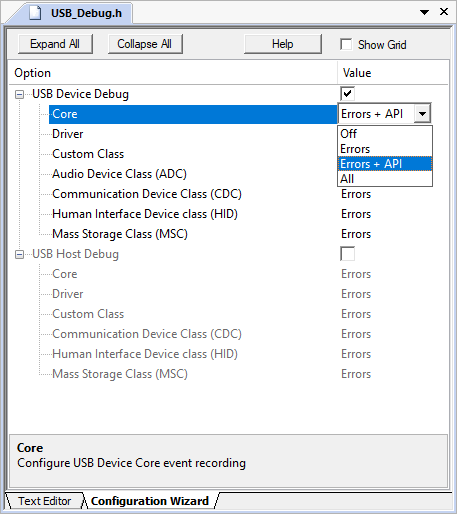
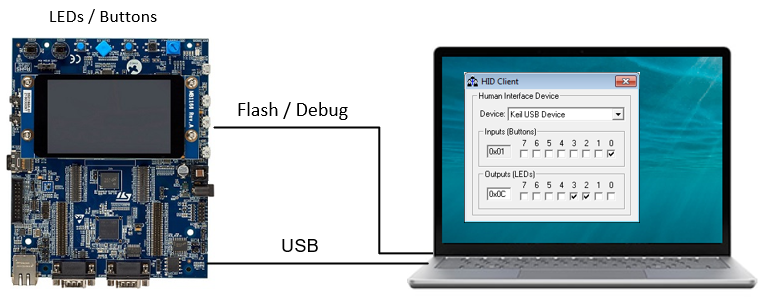
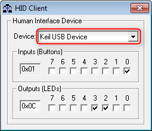
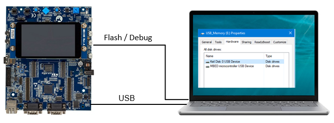
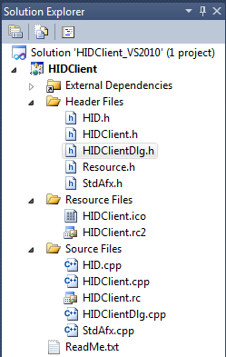

This chapter describes the software structure of the USB Device Component and its use for creating applications. The USB Device Component simplifies the software development of microcontroller systems that interface to an USB Host.
Attributes of the USB Device Component:
- Supports Low-Speed, Full-Speed and High-Speed.
- Supports standard USB Classes with multiple device class instances.
- Supports composite devices. Combine USB Device Classes to create a composite device.
- Supports multiple USB Devices on a single microcontroller with more than one USB Device controller.
- Provides for implementing the USB Device functionality.
- Provides an user-friendly configuration file for each device class to generate USB Descriptors.
- Flexibly assigns USB Endpoints to the microcontroller USB Device peripheral.
- Provides Examples to show the use of the software stack.
For interfacing to an USB Host Computer, additional software may be required. Page USB Host Computer Applications shows an example for such a software running on PCs with Microsoft Windows.
RTE Components
The picture shows the relationship between RTE Components and the microcontroller's USB Device peripheral (USB Controller). RTE Components provide configuration files and user code templates. Configuration files configure the RTE Components, hardware interfaces, memory resources and USB Device driver parameters. They can have an impact on multiple RTE Components. User code templates provide the skeleton for implementing the USB Device functionality.
The gray area around the RTE Components USB Device 1 and Driver_USBD1, as well as USB Controller 1 means that these components are optional and can only be used if a microcontroller device has multiple USB controllers present. If this is the case, an USB Device Class can be connected to any of the USB Device Instances.
USB Device peripherals can have one or more of the following USB Device Classes:
- Audio Device Class (ADC) is used to exchange streaming audio data between the USB Host and the USB Device.
- Communication Device Class (CDC) provides virtual communication port functionality to the USB Host.
- Human Interface Device (HID) is typically used to implement a keyboard, joystick, or mouse. The HID Class can be also used for low bandwidth data exchange.
- Mass Storage Class (MSC) is used to connect various storage devices to an USB Host. Mass Storage Class media can be an SD card, internal or external Flash memory, or RAM.
- Custom Class is used to implement either a standard or a vendor specific USB Device Class.
Generic information about USB Device Classes can be found on the USB-IF's Approved Class Specification Documents page.
Multiple RTE Component instances can interface with more than one USB Controller or can implement multiple USB Device Classes. RTE Component instances are numbered. The number is appended to the RTE Component name, related configuration files, and user code templates. Each RTE Component has a separate configuration file. For example, for HID 0 and HID 1 the configuration files have the name USB_Config_HID_0.h and USB_Config_HID_1.h.
- Note
- The default configuration settings are pre-configured for one instance of an USB Device or USB Device Class in a non-composite device peripheral. For other combinations the settings need to be edited to ensure proper operation. The USB Composite Device example shows how to implement and configure a composite devices
Create an Application
The steps to create a microcontroller application that uses USB communication with an USB Device controller are:
- Select RTE Components along with the USB Device Classes that are required for your application.
- Enable and configure the USB Device Driver.
- Configure the USB Device that connects the USB Middleware to the microcontroller USB peripheral.
- Configure USB Device Class Configuration and USB Endpoint Settings for each selected USB Device Class and instance.
- Configure the System Resources according to the USB Device component's Resource Requirements.
- Implement the Application Code using code templates that are provided for the USB Device Classes.
- If required by your application, you can change the default USB Device descriptors.
- Debug you application using the built-in mechanisms of the USB Component.
For interfacing to an USB Host computer, standard USB Device Classes drivers can be used. This may require additional software development for the USB Host application. An exemplary application for interfacing to an USB HID Device is explained here.
RTE Component Selection
Only a few steps are necessary to complete the RTE Component selection:
- From the USB Component:
- Select USB:CORE that provides the basic functionality required for USB communication.
- Set USB:Device to '1'. This creates one USB Device for communication with the USB Host.
- Select the desired USB Classes (HID, MSC, CDC, ADC, or Custom Class). For example, set USB:Device:HID to '1' to create a single HID Class Device. If you select more than one class or multiple instances of the same class on the same device, you will create a Composite USB Device.
- From the Drivers Component:
- Select an appropriate USB Device driver suitable for your application.
- From the Device Component:
- Additional device specific drivers may be required according to the validation output.
- From the CMSIS Component:
- Select the CMSIS:CORE to provide the core interface to the processor.
- Select a suitable CMSIS:RTOS2 that is a required for the application.

RTE Component Selection
- Note
- Most microcontrollers have only one USB Controller implemented in hardware and only one driver Driver_USBD0 is available. In this case, only one USB:Device can be selected to generate USB Device 0.
- On a single USB Device 0 an USB Composite Device may be implemented that combines multiple USB Device Classes.
- When a microcontroller implements multiple USB Controllers an additional USB Device 1 can be generated by setting USB:Device to '2'.
USB Driver and Controller
The USB Device Driver and the USB Controller of the microcontroller need to be correctly configured. In particular this means:
- The USB Device Driver selected under the Drivers Component is typically configured with a driver specific configuration header file. Some microcontrollers may require settings that are related to a physical layer interface **(PHY)**. The picture below shows two possible variants. Either, the USB PHY is integrated into the controller, or an external chip is used for providing the USB signal lines:

USB Controller and PHY Setups
- The USB Controller of the microcontroller typically needs specific clock settings. Consult the user's guide of the microcontroller to understand the requirements. Alternatively, you may copy the setup of an USB Device example (in case your hardware setup is similar to that of the chosen evaluation boards).
USB Device Configuration
The configuration file USBD_Config_n.h is listed in the Project Windows under the Component USB and contains a number of important settings for the specific USB Device.
- The Driver_USBD# number is set according to the selected USB Controller. This specifies which driver will be used for the USB Device determining the pin-out as well. For devices with single USB Device Controller it will typically be '0'.
- High-Speed may be selected if supported by the USB Controller.
- The Vendor ID (VID) needs to be set to a private VID. The default Vendor ID is owned by Keil and must not be used for actual products. Please visit USB-IF for more information on how to apply for a valid Vendor ID.
- Every device variant needs an unique Product ID. Together with the Vendor ID, it is used by the Host computer's operating system to find a driver for your device.
- The Device Release Number will be shown in Windows and Linux systems as “Firmware Revision”. The number will be interpreted as “binary coded decimal”, meaning that 0x0101 will be shown as firmware revision 1.01.
- The Manufacturer, Product and the Serial Number String can be set to identify the USB Device on the USB Host.
Refer to USB Core Configuration for more configuration options of the USB Device.
- Note
- You can configure the USB Device at run-time using the functions from the USB Device Core API. The section USB Device Core explains the details. Implement the run-time specific behavior with the user code template USBD_User_Device_n.c.
USB Device Class Configuration and USB Endpoint Settings
The USB Device Class Parameters and Endpoint Settings are configured in separate files for each USB Device Class and separately for each instance. The configuration files contain Device Class specific Endpoint Settings Numbers and are listed in the Project Window under the Component USB.
- USBD_Config_ADC_n.h configuration for Audio Device Class (ADC).
- USBD_Config_CDC_n.h configuration for Communication Device Class (CDC).
- USBD_Config_HID_n.h configuration for Human Interface Device Class (HID).
- USBD_Config_MSC_n.h configuration for Mass Storage Device Class (MSC).
- USBD_Config_CustomClass_n.h configuration for Custom Class.
Each USB Endpoint can only be used once on the same USB Device. It has to be made sure that the different USB Device Classes or multiple instances of the same USB Device Class use different Endpoints. The default configuration supports applications that use a single USB Device Class. The remaining parameters are specific settings that configure parameters for USB communication speed and the USB Device Class.
System Resource Configuration
For proper operation, the USB Device Component requires some system configuration settings. The requirements are:
- Additional main stack size of 512 bytes.
- The USB Device Component uses CMSIS-RTOS2 threads. In case RTX v5 is used no changes to RTX settings are necessary as all resources are allocated statically.
For more information, check the USB Device component's Resource Requirements section.
User Code Implementation
files provide function templates used to implement USB Device Class functionality. The available functions are explained in the Reference section of the USB Component. These routines can be adapted to the needs of the microcontroller application, in case different then default functionality is needed.
The following templates are available for the USB Device component:
Changing Default USB Descriptors
If there are different requirements regarding the USB Descriptors than the USB Component allows, a user can change any or all of the default USB descriptors. Default descriptors are the ones that library creates based on Device and Classes configuration file settings and are located in code memory.
The descriptors can be changed in two of the following ways:
Static change
Static change of descriptors can be done to replace default descriptors if they will not change at runtime. The descriptors can be easily overridden by user code by creating descriptors with the same name.
| USB Device Descriptor | Purpose |
const uint8_t usbdn_ep0_descriptor[] | Control Endpoint 0 descriptor |
const uint8_t usbdn_device_descriptor[] | USB Device descriptor |
const uint8_t usbdn_config_descriptor_fs[] | Configuration descriptor for low/full-speed |
const uint8_t usbdn_config_descriptor_hs[] | Configuration descriptor for high-speed |
const uint8_t usbdn_device_qualifier_fs[] | Device qualifier for low/full-speed |
const uint8_t usbdn_device_qualifier_hs[] | Device qualifier for high-speed |
const uint8_t usbdn_other_speed_config_descriptor_fs[] | Other speed configuration descriptor for low/full-speed |
const uint8_t usbdn_other_speed_config_descriptor_hs[] | Other speed configuration descriptor for high-speed |
- Note
n in usbdn_ represents the USB Device instance. So for the USB Device 0 instance, you have to use usbd0_...-
String descriptor cannot be replaced this way.
Code Example
18U,
1U,
0U,2U,
0U,
0U,
0U,
64U,
0x51U,0xC2U,
0x34U,0x12U,
0U,1U,
0U,
0U,
0U,
1U
};
Dynamic change
Dynamic change of descriptors can be done to change descriptors at runtime. The struct usbd_desc_t contains the required information. It is stored in RAM and contains pointers to the USB descriptors. If you change the pointers in the structure to the point to the externally created ones, you can change the descriptors at runtime.
The actual variable names of the structures holding descriptor pointers are usbdn_desc (n indicating the USB Device instance number). The following code example shows how to override the device descriptor for the USB Device 0 (usbd0_desc):
Code Example
const uint8_t dev0_device_descriptor[] = {
18U,
1U,
0U,2U,
0U,
0U,
0U,
64U,
0x51U,0xC2U,
0x34U,0x12U,
0U,1U,
0U,
0U,
0U,
1U
};
int main (void) {
...
...
}
- Note
- For changing just serial number string use the USBD_SetSerialNumber function.
-
For non high-speed capable device following descriptors are not important:
Debugging
USB Device Component is distributed in a source form and it allows direct code debug. However, with breakpoint stopping the program execution the USB Device will usually malfunction as USB Host will not be able to properly enumerate the device or communicate with it thus causing communication timeouts and failures. For such usage case a non-intrusive debug via the debug events is also provided (via Event Recorder).
USB_Debug.h configuration file is used to configure the level of debug events.
The USB Device:Debug Events describes the events implemented in the USB Device Component.
Event Recorder Support
is a powerful tool that provides visibility to the dynamic execution of the program.
The USB Device Component generates a broad set of Debug Events for the Event Recorder and implements required infrastructure to interface with it.
To use the Event Recorder it is required to create an image with event generation support. The necessary steps are:
- : in the RTE management dialog enable the software component CMSIS-View:Event Recorder.
- Ensure that Event Recorder is initialized preferably by if CMSIS-RTOS2 RTX v5 is used, or alternatively by calling the function in the application code.
- Event Recorder Configuration: if necessary, adjust default Event Recorder configuration.
- Build the application code, download it to the target hardware and start debug session.
Now, when the USB Device generates event information, it can be viewed in the .
Event Recorder Configuration
This section describes the configuration settings for the Event Recorder; refer to for more information.
USB Event Generation Configuration
Selecting the USB:CORE will add the file USB_Debug.h to your project. Use this file to set the event generation configuration for USB core, drivers, and device classes separately. The file is available for USB Device and Host components.

USB_Debug.h file for event generation configuration
The following settings are available for event generation configuration of each module:
- Off means no events will be generated by the module
- Errors means only error events will be generated by the module
- Errors + API means error and API call events will be generated by the module
- All means all available events will be generated by the module. Besides error and API call events, this contains operation and detailed events.
Event IDs
The USB Device component uses the following event IDs:
| Component | Event ID |
| USBD_Core | 0xA0 |
| USBD_Driver | 0xA1 |
| USBD_CC | 0xA2 |
| USBD_ADC | 0xA3 |
| USBD_CDC | 0xA4 |
| USBD_HID | 0xA5 |
| USBD_MSC | 0xA6 |
Examples
MDK contains multiple example projects that show how to implement an USB Device. The following examples are available for most of the development boards:
To use these examples, use the , select the related Board and Copy the example.
USB Device HID
The Human Interface Device (HID) example shows simple data exchange between the USB Device and an USB Host Computer. The examples accesses the board LEDs and push buttons from the USB Host Computer using the HID client program. The following picture shows an exemplary connection of the development board and the USB Host Computer.

USB device HID example hardware setup
The Abstract.txt file contained in the Documentation group of the Project window gives you more information on the general setup and the available I/O of the development board.
Build the "USB Device HID" Project
Open the example project in MDK.
Source Files
HID.c contains the main C function that initializes the board hardware and the USB Device Component. It also sends the current input status (typical buttons) via USBD_HID_GetReportTrigger to the USB Host.- The USBD_User_HID_0.c is an adapted code template that implements all necessary functions I/O communication. Refer to HID: Human Interface Class for details about these template functions.
If you are using RTOS other than CMSIS-RTOS2 RTX5 for your project please make sure to satisfy USB Device Resource Requirements.
You may now build and download the example project to the evaluation board using the µVision commands:
- Project --> Build target (F7)
- Flash --> Download (F8)
After these steps, the project should start executing on your evaluation kit. In case of errors, refer to the Evaluation Board User's Guide for configuration information.
Using the "USB Device HID" Project
Hardware Setup
The setup of the Evaluation Board hardware is described in the Abstract.txt file.
- Verify all jumper settings on the target hardware.
- Use an USB cable to connect your development board to the Host PC and power up your board.
- Wait for the driver installation on the PC to complete. First you will see "Installing device driver software" and after a successful installation "USB Input Device":

Automatic driver installation
PC Software
The USB Device HID example can be tested on a Windows PC using the HIDClient.exe utility (located in "C:\Keil\ARM\Utilities\HID_Client\Release"). The program runs stand-alone without installation.
Steps to check the USB communication using the client utility:
- Run "C:\Keil\ARM\Utilities\HID_Client\Release\HIDClient.exe".
- Select the Keil USB Device to establish the communication channel.
- Press buttons on the target hardware and/or use the check boxes in the HID Client to interact with the application.

Testing the connection with the HID Client app
USB Device Mass Storage
A mass storage USB Device implements an USB memory stick. Together with the File System you can connect various drives using MSC to an USB Host: SD cards, internal or external Flash memory and even a simple RAM disk. The examples accesses either on-chip RAM or a SD card where available. The USB Host can then access the new drives using standard file access methods. The following picture shows an exemplary connection of the development board and the USB Host Computer.

USB device mass storage example hardware setup
The Abstract.txt file contained in the Documentation group of the Project window gives you more information on the general setup and the available storage device on the development board.
Build the "USB Device Mass Storage" Project
Open the example project in MDK.
Source Files
MassStorage.c contains the main C function that initializes the board hardware and the USB Device Component.- The USBD_User_MSC_0.c is an adapted code template that implements all necessary file access functions. Refer to MSC: Mass Storage Class for details about these template functions.
If you are using RTOS other than CMSIS-RTOS2 RTX5 for your project please make sure to satisfy USB Device Resource Requirements.
You may now build and download the example project to the evaluation board using the µVision commands:
- Project --> Build target (F7)
- Flash --> Download (F8)
After these steps, the project should start executing on your evaluation kit. In case of errors, refer to the Evaluation Board User's Guide for configuration information.
Using the "USB Device Mass Storage" Project
Hardware Setup
The setup of the Evaluation Board hardware is described in the Abstract.txt file.
- Verify all jumper settings on the target hardware.
- Insert a SD card into the socket (if available).
- Use an USB cable to connect your development board to the Host PC and power up your board.
- Wait for the driver installation on the PC to complete. First you will see "Installing device driver software" and after a successful installation "Keil Disk 0 USB Device":

Automatic driver installation
PC Software
The USB Device Mass Storage example can be tested on a Windows PC using the Windows Explorer. After a successful driver installation, the AutoPlay window appears:

AutoPlay notification
If you click on Open folder to view files Windows Explorer automatically starts with the drive opened.
USB Device Virtual COM Port
The Communication Device Class (CDC) is used for implementing virtual communication ports. This example demonstrates a bridge between a Virtual COM Port on the USB Host Computer and an UART port on the evaluation board.
The following picture shows an exemplary connection of the development board and the USB Host Computer.

USB device virtual COM port example hardware setup
The Abstract.txt file contained in the Documentation group of the Project window gives you more information on the general setup and the available I/O on the development board.
Build the "USB Device Virtual COM" Project
Open the example project in MDK.
Source Files
VirtualCOM.c contains the main C function that initializes the board hardware and the USB Device Component. Furthermore, it contains the code that exchanges the data internally between the USB and the UART port.- The USBD_User_CDC_0.c is an adapted code template that implements all necessary file access functions. Refer to CDC: Communication Device Class (ACM) for details about these template functions.
If you are using RTOS other than CMSIS-RTOS2 RTX5 for your project please make sure to satisfy USB Device Resource Requirements.
You may now build and download the example project to the evaluation board using the µVision commands:
- Project --> Build target (F7)
- Flash --> Download (F8)
After these steps, the project should start executing on your evaluation kit. In case of errors, refer to the Evaluation Board User's Guide for configuration information.
Using the "USB Device Virtual COM" Project
Hardware Setup
The setup of the Evaluation Board hardware is described in the Abstract.txt file.
- Verify all jumper settings on the target hardware.
- Connect the UART on the development board to your PC (you might need an USB to serial RS232 adapter). Use an USB cable to connect your development board to the Host PC and power up your board.
- The Welcome to the Found New Hardware Wizard appears. Installation of the driver is described in detail in the
Abstract.txt file.
PC Software
The USB Device Virtual COM example can be tested on a Windows PC using a terminal emulation program. Since Hyperterminal in not part of Windows any more, please download an appropriate program for this purpose (such as PuTTY for example). Open the two COM ports "COMx" and "COMy". Any data from "COMx" will be echoed on "COMy" and visa versa:
About Host PC driver for Microsoft Windows
The example folder contains two files relevant for driver installation on the Microsoft Windows:
- Driver setup information file (xxx-vcom.inf) which is used to create a digitally signed driver catalog file (xxx-vcom.cat)
- Digitally signed driver catalog file (xxx-vcom.cat)
The driver files are provided as an example, the driver setup information file should be adapted and digitally signed driver catalog file should be created from adapted driver setup information file.
Driver setup information file should be adapted in the following way:
- c251 in Vendor ID VID_c251 entries should be changed to the vendor ID number assigned to your company by the USB organization (c251 Vendor ID is reserved for Keil Software and should not be used)
- xxxx in Product ID PID_xxxx entries should be changed to the product ID as assigned by your company
- in [DeviceList.xxx] sections, entries not relevant for the device, should be removed or added as described below:
- if device is pure CDC class device (not composite) then all entries ending with &MI_xx should be removed
- if device is a composite device with one or more CDC class instances then entries not ending with &MI_xx should be removed and entries ending with &MI_xx should exist for each CDC class instance (example driver contains entries ending with &MI_00 and &MI_02 which are used for composite device containing two CDC class instances and each instance uses 2 interfaces where MI_00 describes first CDC instance and MI_02 entry describes second CDC instance)
- [Strings] section should be changed as desired
- Note
- Vendor ID and Product ID are configured in the USBD_Config_n.h configuration file of the embedded application.
- For producing digitally signed driver catalog file please refer to Microsoft Windows documentation.
USB Device Audio
The Audio Device Class (ADC) is used to send or receive audio, voice, and other sound-related functionality. This example demonstrates a USB Audio Device attached to the USB Host Computer to provide this capability.
The following picture shows an exemplary connection of the development board and the USB Host Computer. Using the USB connection, the development board will play sound using its on-board speaker:

USB device audio example hardware setup
The Abstract.txt file contained in the Documentation group of the Project window gives you more information on the general setup and the available I/O on the development board.
Build the "USB Device Audio" Project
Open the example project in MDK.
Source Files
Audio.c contains the main C function that initializes the board hardware and the USB Device Component.- The file USBD_User_ADC_0.c is an code template that needs to be adapted to board audio hardware. Refer to ADC: Audio Device Class for details about these template functions.
If you are using RTOS other than CMSIS-RTOS2 RTX5 for your project please make sure to satisfy USB Device Resource Requirements.
You may now build and download the example project to the evaluation board using the µVision commands:
- Project --> Build target (F7)
- Flash --> Download (F8)
After these steps, the project should start executing on your evaluation kit. In case of errors, refer to the Evaluation Board User's Guide for configuration information.
Using the "USB Device Audio" Project
Hardware Setup
The setup of the Evaluation Board hardware is described in the Abstract.txt file.
- Verify all jumper settings on the target hardware.
- Use a USB cable to connect your development board to the Host PC and power up your board.
- The Welcome to the Found New Hardware Wizard appears. Installation of the driver is described in detail in the
Abstract.txt file.
- If detected correctly, you should be able to see the following message:

Installation succeeded
PC Software
Use any PC software that is capable of playing audio. Normally, the device that has been connected last will play the audio data. If you do not hear any sound coming from the on-board speaker, check your system settings.
Custom USB Device (WinUSB_Echo)
Using the custom USB class, you can implement any USB device that is not covered by the other classes available in the MDK Middleware. An example is available for various development boards that is implementing a custom class to work with the Windows USB (WinUSB), a generic driver for USB devices for Microsoft Windows. The example demonstrates a WinUSB device that contains Bulk IN and Bulk OUT endpoints. All data that the device receives on the Bulk OUT endpoint is echoed back on the Bulk IN endpoint.
The following picture shows an exemplary connection of the development board and the Windows USB host computer. Using the USB connection and WinUSB_Test.exe ("install_dir\ARM\PACK\Keil\Middleware\x.y.z\Utilities\WinUSB_Test" folder (where "install_dir" refers to the installation directory of Arm Keil MDK, default "C:\Keil_v5") and x >= 7, y >= 5, z >= 0), you can initiate. For more information, refer to WinUSB Test.

Hardware setup for WinUSB Custom Class example
The Abstract.txt file contained in the Documentation group of the Project window gives you more information on the general setup.
Build the "WinUSB_Echo" Project
Open the example project in MDK.
Source Files
main.c contains the main C function that initializes the hardware.WinUSB_Echo.c contains the app_main C function that initializes USB Device Component.- The files USBD_User_CustomClass_0.c/USBD_User_CustomClass_1.c are adapted code templates that implement all necessary functions. Refer to Custom Class for details about these template functions.
If you are using RTOS other than CMSIS-RTOS2 RTX5 for your project please make sure to satisfy USB Device Resource Requirements.
You may now build and download the example project to the evaluation board using the µVision commands:
- Project --> Build target (F7)
- Flash --> Download (F8)
After these steps, the project should start executing on your evaluation kit. In case of errors, refer to the Evaluation Board User's Guide for configuration information.
Using the "WinUSB_Echo" Project
Hardware Setup
The setup of the evaluation board hardware is described in the Abstract.txt file.
- Verify all jumper settings on the target hardware.
- Use a USB cable to connect your development board to the host PC and power up your board.
- If you connect the device to a PC running Windows 8 or later, the device driver will be installed automatically. On Windows 7, you need to select a driver file that can be found in the project folder. For more information, refer to the
Abstract.txt file in the µVision project.
PC Software
The example can be tested on a Windows PC using the WinUSB_Test.exe utility provided with MDK Middleware. The program runs stand-alone without installation. Simply run "install_dir\\ARM\PACK\Keil\MDK-Middleware\x.y.z\Utilities\WinUSB_Test\Release\WinUSB_Test.exe" application (where x >= 7, y >= 5, z >= 0):

WinUSB test application
Device Selection
| Configuration Option | Selection |
| GIUD | The GUID that is used in Windows to access the device. For this example, the GIUD is fixed. To create your own GIUD, refer to the Abstract.txt file. |
| Device | Select the device that you have attached to the PC (VID should be C251). |
Control Transfer
| Configuration Option | Selection |
| Setup Packet | Normally, leave open. Will be filled automatically from the next options. |
| Direction | Specify the communication direction. If you want to read for example the device descriptor from the device, use Device-to-Host. |
| Type | Type of the control request (standard/class/vendor). |
| Recipient | Recipient of the control transfer message (device/interface/endpoint/other). |
| bRequest | Specify the setup packet request being made. |
| wValue | Specify the wValue of the request. |
| wIndex | Specify the wIndex of the request. |
| wLength | Specify the wLength of the request. |
Data Phase
| Configuration Option | Selection |
| Data (aa bb cc ..) | Shows the transmitted data |
| Transfer button | Start the data transfer |
| File | Select a file for transfer or for saving transferred data |
| Transfer to/from File button | Start the data transfer to/from file |
Bulk/Interrupt Transfer
| Configuration Option | Selection |
| Interface | Select USB interface number |
| IN Transfer Endpoint | Select IN endpoint to be used for bulk/interrupt transfer |
| Number of bytes to receive | Specify the number of bytes to be received |
| Data (aa bb cc ..) | Shows the received data |
| Start Reception button | Start listening on the specified endpoint |
| File | Select a file for saving received data |
| Start Reception to File button | Start listening on the specified endpoint and save data to file |
| OUT Transfer Endpoint | Select OUT endpoint to be used for bulk/interrupt transfer |
| Data (aa bb cc ..) | Enter the data to be transmitted |
| Start Transmission button | Start sending data on the specified endpoint |
| File | Select a file for data to be transmitted |
| Start Transmission from File button | Start sending data from the specified file on the OUT endpoint |
Examples
Control Transfer
To setup the control endpoint and to read out the device descriptor of the device, enter the following:
- Direction: Device-to-Host
- bRequest: 06
- wValue: 0100
- wIndex 0000
- wLength: 0012
After pressing the Transfer button, you see the response in the Data window:

Control transfers in the WinUSB test app
Bulk Transfer
To loop data from the device to the PC and back, enter the following:
- Interface: 0
- IN Transfer Endpoint: 1
- Press Start Reception to Buffer
- OUT Transfer Endpoint: 1
- Enter some data in the right-hand Data window, for example AA BB CC
- Press Start Transmission from Buffer
You now see the same data in the left-hand Data window:

Bulk transfers in the WinUSB test app
About Host PC driver for Microsoft Windows
The example folder contains two files relevant for driver installation on the Microsoft Windows:
- Driver setup information file (xxx-winusb_echo.inf) which is used to create a digitally signed driver catalog file (xxx-winusb_echo.cat)
- Digitally signed driver catalog file (xxx-winusb_echo.cat)
The driver files are provided as an example, the driver setup information file should be adapted and digitally signed driver catalog file should be created from adapted driver setup information file.
Driver setup information file should be adapted in the following way:
- c251 in Vendor ID VID_c251 entries should be changed to the vendor ID number assigned to your company by the USB organization (c251 Vendor ID is reserved for Keil Software and should not be used)
- xxxx in Product ID PID_xxxx entries should be changed to the product ID as assigned by your company
- [DeviceList.xxx] sections should be changed if device is a composite device in the following way:
instead of entries like: DeviceName0% = USB_Install, USB\VID_xxxx&PID_yyyy entries describing each custom class instance should be added like: DeviceName0% = USB_Install, USB\VID_xxxx&PID_yyyy&MI_00 where two digit number after MI_ describes the starting interface of a custom class instance
- [Strings] section should be changed as desired
- Note
- Vendor ID and Product ID are configured in the USBD_Config_n.h configuration file of the embedded application.
- For producing digitally signed driver catalog file please refer to Microsoft Windows documentation.
USB Composite Device
An USB Composite Device is a peripheral device that supports more than one device class. Many different devices are implemented as composite devices. For example they consist of a certain device class, but also an USB disk that has all the necessary drivers stored so that the device can be installed automatically, without the need to have access to a certain driver software.
In this example, we will implement a composite device that is made up of two devices that have been used in the previous tutorials. We will have access to the development board's buttons (from the HID example) and the SC card (from the MSC example).

USB composite device example hardware setup
Build the "USB Composite" Project
Open the MSC example project in MDK. From the HID example project, copy HID.c and USBD_User_HID.c and add them to the project. Open the Manage Run-Time Environment window. Add one USB:Device:HID component to the project. After clicking OK, you will see that the USB Component in the Project window will have an additional entry: USBD_Config_HID_0.h. As the HID example uses LEDs and push-buttons, you might need to add these Board Support related items as well. Check the RTE Component selection of the HID example for further detail.
Source Files
Now we have two main functions in the project. We need to delete one of them. Open the MassStorage.c file. Copy the lines
finit ("M0:");
fmount("M0:");
to the HID.c file right before the lines
Insert
to the #includes at the beginning of the HID.c file. Afterwards, remove the MassStorage.c from your project. Now you have only one main function left.
USB Device Configuration
Before running the program on the target hardware, you need to edit the USBD_Config_HID_0.h file. Open the file, switch to the Configuration Wizard and go to the Bulk Endpoint Settings. As the file is generic and has no information about other classes available in the project, the Endpoint 1 is configured for IN and OUT. This endpoint is already used in the USBD_Config_MSC_0.h file. So change the number for IN and for OUT to '2'. This will make the HID Component use the Endpoint 2 for data exchange with the USB Host and no conflicts will occur with the MSC class.
If you are using RTOS other than CMSIS-RTOS2 RTX5 for your project please make sure to satisfy USB Device Resource Requirements.
You may now build and download the example project to the evaluation board using the µVision commands:
- Project --> Build target (F7)
- Flash --> Download (F8)
After these steps, the project should start executing on your evaluation kit. In case of errors, refer to the Evaluation Board User's Guide for configuration information.
Using the "USB Composite" Project
Hardware Setup
The setup of the Evaluation Board hardware is described in the Abstract.txt file.
- Verify all jumper settings on the target hardware.
- Insert a SD card into the socket.
- Use an USB cable to connect your development board to the Host PC and power up your board.
- Wait for the driver installation on the PC to complete. First you will see "Installing device driver software" and after a successful installation "USB Input Device" and "Keil Disk 0 USB Device".
- Note
- If devices do not install correctly then probably device is using same Vendor ID and Product ID as some device that was previously already installed. There are two possible solutions: either change Product ID in USBD_Config_0.h file or uninstall previously installed device that uses same Vendor ID and Product ID.
PC Software
The HID part of this example can be tested on a Windows PC using the HIDClient.exe utility (located in "C:\Keil\ARM\Utilities\HID_Client\Release"). The program runs stand-alone without installation.
Steps to check the USB communication using the client utility:
- Run "C:\Keil\ARM\Utilities\HID_Client\Release\HIDClient.exe".
- Select the Keil USB Device to establish the communication channel.
- Press buttons on the target hardware and/or use the check boxes in the HID Client to interact with the application. The Mass Storage part of this example can be tested on a Windows PC using the Windows Explorer.
- After a successful driver installation, the AutoPlay window appears.
- If you click on Open folder to view files Windows Explorer automatically starts with the drive opened.
USB Mouse
The USB Mouse example application shows how to control the mouse pointer of a host PC with a microcontroller device using USB Device HID.
The following picture shows an exemplary connection of the development board (in this case a MCBSTM32F400) to a host PC. Using the joystick on the development board you can move the mouse pointer on the screen. Pressing the joystick down will issue a left-click action.

USB device mouse example hardware setup
Create the "USB Mouse" Project
In this example, we are using the MCBSTM32F400 board with the STM32F407IGHx device. Create a new project in MDK (Select Device STMicroelectronics:STM32F4 Series: STM32F407:STM32F407IG:STM32F407IGHx). In the Manage Run-Time Environment window, select the following components:
- Board Support:Joystick (API):Joystick (Variant MCBSTM32F400)
- CMSIS:Core
- CMSIS:RTOS2 (API):Keil RTX5
- CMSIS Driver:USB Device (API):Full-speed
- Device:STM32Cube Framework (API):Classic
- USB:Device: 1
- USB:Device:HID:1
Click the Resolve button and then OK.
Before continuing to add the required source code, you need to add a template file called USBD_User_HID_Mouse_0.c:
- Right-click on Source Group 1 and select Add New Item to Group 'Source Group 1'....
- Click on User Code Template and select the USB Device HID Mouse template.
- Click Add to copy the file USBD_User_HID_Mouse_0.c to the project.
Source Files
- Click on New (Ctrl + N) to create a new file.
- Save it (File -> Save) as main.h.
- Copy the following code into the main.h file and save it again:
#ifndef __MAIN_H
#define __MAIN_H
#include "stm32f4xx_hal.h
#include "cmsis_os2.h" // ::CMSIS:RTOS2
/* Exported types ------------------------------------------------------------*/
/* Exported constants --------------------------------------------------------*/
extern uint64_t app_main_stk[];
extern const osThreadAttr_t app_main_attr;
/* Exported macro ------------------------------------------------------------*/
/* Exported functions ------------------------------------------------------- */
extern void app_main (void *arg);
#endif /* __MAIN_H */
/************************ (C) COPYRIGHT STMicroelectronics *****END OF FILE****/
- Right-click on Source Group 1 and select Add New Item to Group 'Source Group 1'....
- Click on C File (.c) and enter main in the Name box.
- Copy the following code into the main.c file:
#include "main.h
#ifdef _RTE_
#include "RTE_Components.h" // Component selection
#endif
#ifdef RTE_CMSIS_RTOS2 // when RTE component CMSIS RTOS2 is used
#include "cmsis_os2.h" // ::CMSIS:RTOS2
#endif
#ifdef RTE_CMSIS_RTOS2_RTX5
uint32_t HAL_GetTick (void) {
static uint32_t ticks = 0U;
uint32_t i;
if (osKernelGetState () == osKernelRunning) {
return ((uint32_t)osKernelGetTickCount ());
}
/* If Kernel is not running wait approximately 1 ms then increment
and return auxiliary tick counter value */
for (i = (SystemCoreClock >> 14U); i > 0U; i--) {
__NOP(); __NOP(); __NOP(); __NOP(); __NOP(); __NOP();
__NOP(); __NOP(); __NOP(); __NOP(); __NOP(); __NOP();
}
return ++ticks;
}
#endif
/* Private typedef -----------------------------------------------------------*/
/* Private define ------------------------------------------------------------*/
/* Private macro -------------------------------------------------------------*/
/* Private variables ---------------------------------------------------------*/
/* Private function prototypes -----------------------------------------------*/
static void SystemClock_Config(void);
static void Error_Handler(void);
/* Private functions ---------------------------------------------------------*/
int main(void)
{
/* STM32F4xx HAL library initialization:
- Configure the Flash prefetch, Flash preread and Buffer caches
- Systick timer is configured by default as source of time base, but user
can eventually implement his proper time base source (a general purpose
timer for example or other time source), keeping in mind that Time base
duration should be kept 1ms since PPP_TIMEOUT_VALUEs are defined and
handled in milliseconds basis.
- Low Level Initialization
*/
HAL_Init();
/* Configure the system clock to 168 MHz */
SystemClock_Config();
SystemCoreClockUpdate();
/* Add your application code here
*/
#ifdef RTE_CMSIS_RTOS2
/* Initialize CMSIS-RTOS2 */
osKernelInitialize ();
/* Create application main thread */
osThreadNew(app_main, NULL, &app_main_attr);
/* Start thread execution */
osKernelStart();
#endif
/* Infinite loop */
while (1)
{
}
}
static void SystemClock_Config(void)
{
RCC_ClkInitTypeDef RCC_ClkInitStruct;
RCC_OscInitTypeDef RCC_OscInitStruct;
/* Enable Power Control clock */
__HAL_RCC_PWR_CLK_ENABLE();
/* The voltage scaling allows optimizing the power consumption when the device is
clocked below the maximum system frequency, to update the voltage scaling value
regarding system frequency refer to product datasheet. */
__HAL_PWR_VOLTAGESCALING_CONFIG(PWR_REGULATOR_VOLTAGE_SCALE1);
/* Enable HSE Oscillator and activate PLL with HSE as source */
RCC_OscInitStruct.OscillatorType = RCC_OSCILLATORTYPE_HSE;
RCC_OscInitStruct.HSEState = RCC_HSE_ON;
RCC_OscInitStruct.PLL.PLLState = RCC_PLL_ON;
RCC_OscInitStruct.PLL.PLLSource = RCC_PLLSOURCE_HSE;
RCC_OscInitStruct.PLL.PLLM = 25;
RCC_OscInitStruct.PLL.PLLN = 336;
RCC_OscInitStruct.PLL.PLLP = RCC_PLLP_DIV2;
RCC_OscInitStruct.PLL.PLLQ = 7;
if(HAL_RCC_OscConfig(&RCC_OscInitStruct) != HAL_OK)
{
/* Initialization Error */
Error_Handler();
}
/* Select PLL as system clock source and configure the HCLK, PCLK1 and PCLK2
clocks dividers */
RCC_ClkInitStruct.ClockType = (RCC_CLOCKTYPE_SYSCLK | RCC_CLOCKTYPE_HCLK | RCC_CLOCKTYPE_PCLK1 | RCC_CLOCKTYPE_PCLK2);
RCC_ClkInitStruct.SYSCLKSource = RCC_SYSCLKSOURCE_PLLCLK;
RCC_ClkInitStruct.AHBCLKDivider = RCC_SYSCLK_DIV1;
RCC_ClkInitStruct.APB1CLKDivider = RCC_HCLK_DIV4;
RCC_ClkInitStruct.APB2CLKDivider = RCC_HCLK_DIV2;
if(HAL_RCC_ClockConfig(&RCC_ClkInitStruct, FLASH_LATENCY_5) != HAL_OK)
{
/* Initialization Error */
Error_Handler();
}
/* STM32F405x/407x/415x/417x Revision Z devices: prefetch is supported */
if (HAL_GetREVID() == 0x1001)
{
/* Enable the Flash prefetch */
__HAL_FLASH_PREFETCH_BUFFER_ENABLE();
}
}
static void Error_Handler(void)
{
/* User may add here some code to deal with this error */
while(1)
{
}
}
#ifdef USE_FULL_ASSERT
void assert_failed(uint8_t* file, uint32_t line)
{
/* User can add his own implementation to report the file name and line number,
ex: printf("Wrong parameters value: file %s on line %d\r\n", file, line) */
/* Infinite loop */
while (1)
{
}
}
#endif
/************************ (C) COPYRIGHT STMicroelectronics *****END OF FILE****/
- Right-click on Source Group 1 and select Add New Item to Group 'Source Group 1'....
- Click on C File (.c) and enter app_main in the Name box.
- Copy the following code into the app_main.c file:
#include "main.h
#include "rl_usb.h
#include "Board_Joystick.h
#define APP_MAIN_STK_SZ (1024U)
uint64_t app_main_stk[APP_MAIN_STK_SZ / 8];
const osThreadAttr_t app_main_attr = {
.stack_mem = &app_main_stk[0],
.stack_size = sizeof(app_main_stk)
};
__NO_RETURN void app_main (void *arg) {
uint32_t state, state_ex = 0;
uint8_t mouse_in_report[4];
bool update;
(void)arg;
Joystick_Initialize();
USBD_Initialize (0);
USBD_Connect (0);
while (1) {
state = Joystick_GetState();
update = 0;
mouse_in_report[0] = 0;
mouse_in_report[1] = 0;
mouse_in_report[2] = 0;
mouse_in_report[3] = 0;
if ((state ^ state_ex) & JOYSTICK_CENTER) {
mouse_in_report[0] = (state & JOYSTICK_CENTER) ? 1 : 0;
update = 1;
state_ex = state;
}
if (state & JOYSTICK_LEFT ) { mouse_in_report[1] = (uint8_t)(-4); update = 1; }
if (state & JOYSTICK_RIGHT ) { mouse_in_report[1] = 4 ; update = 1; }
if (state & JOYSTICK_UP ) { mouse_in_report[2] = (uint8_t)(-4); update = 1; }
if (state & JOYSTICK_DOWN ) { mouse_in_report[2] = 4 ; update = 1; }
if (update) {
USBD_HID_GetReportTrigger(0, 0, mouse_in_report, 4);
}
}
}
Before building the project, you need to edit these configuration files (in Configuration Wizard view):
- Under Device, double-click RTE_Device.h and:
- enable I2C1 (Inter-integrated Circuit Interface 1) [Driver_I2C1] (for the Joystick connected to I2C1) and:
- set I2C1_SCL Pin to PB8
- set I2C1_SDA Pin to PB9
- enable USB OTG Full-speed and under it:
- enable Device [Driver_USBD0]
- Under USB, double-click USBD_Config_0.h and under USB Device 0:Device Settings change:
- Under USB, double-click USBD_Config_HID_0.h and under USB Device: Human Interface Device class (HID) 0:Human Interface Device Class Settings change:
- set Maximum Input Report Size (in bytes) to 4 as this is the size of report that is sent for a mouse position change and button presses from the main function
- enable Use User Provided HID Report Descriptor and:
- set User Provided HID Report Descriptor Size (in bytes) to 52
Before building and downloading the project to the target, make sure that the correct debugger is set in the Options for Target dialog (ALT + F7). You may then build and download the example project to the evaluation board using the µVision commands:
- Project --> Build target (F7)
- Flash --> Download (F8)
- Debug --> Start/Stop Debug Session (Ctrl + F5)
- Debug --> Run (F5)
After these steps, the project should start executing on your evaluation kit. In case of errors, refer to the Evaluation Board User's Guide for configuration information.
Using the "USB Mouse" Project
Hardware Setup
- Verify all jumper settings on the target hardware.
- Connect the development board to a host PC attaching a Micro-USB cable to the USBFS port. Observe how it is recognized as a USB HID device with the mouse protocol:

HID-compliant mouse properties
- Play around with the joystick and see how the mouse moves on the screen.
Ethernet-over-USB (for Linux hosts)
The Ethernet-over-USB example connects a computer via USB to a Cortex-M system that provides an Ethernet interface for network connectivity. The Linux Kernel provides native support for the CDC (NCM) USB Device class. This example shows how to connect a Ubuntu system via USB to an MCBSTM32F400 development board.
The following picture shows an exemplary connection of the development board (in this case a MCBSTM32F400) to a host PC.

USB device Ethernet-over-USB example hardware setup
Create the "Ethernet-over-USB" Project
In this example, we are using the MCBSTM32F400 board with the STM32F407IGHx device. Create a new project in MDK (Select Device STMicroelectronics:STM32F4 Series: STM32F407:STM32F407IG:STM32F407IGHx). In the Manage Run-Time Environment window, select the following components:
- CMSIS:Core
- CMSIS:RTOS2 (API):Keil RTX5
- CMSIS Driver:Ethernet MAC (API):Ethernet MAC
- CMSIS Driver:Ethernet PHY (API):KSZ8081RNA
- CMSIS Driver:USB Device (API):High-speed
- Device:STM32Cube Framework (API):Classic
- USB:Device: 1
- USB:Device:CDC:1
Click the Resolve button and then OK.
Before continuing to add the required source code, you need to add a template file called USBD_User_CDC_NCM_ETH_0.c:
- Right-click on Source Group 1 and select Add New Item to Group 'Source Group 1'....
- Click on User Code Template and select the USB Device CDC NCM Ethernet Bridge template.
- Click Add to copy the file USBD_User_CDC_NCM_ETH_0.c to the project.
Source Files
- Click on New (Ctrl + N) to create a new file.
- Save it (File -> Save) as main.h.
- Copy the following code into the main.h file and save it again:
#ifndef __MAIN_H
#define __MAIN_H
#include "stm32f4xx_hal.h
#include "cmsis_os2.h" // ::CMSIS:RTOS2
/* Exported types ------------------------------------------------------------*/
/* Exported constants --------------------------------------------------------*/
extern uint64_t app_main_stk[];
extern const osThreadAttr_t app_main_attr;
/* Exported macro ------------------------------------------------------------*/
/* Exported functions ------------------------------------------------------- */
extern void app_main (void *arg);
#endif /* __MAIN_H */
/************************ (C) COPYRIGHT STMicroelectronics *****END OF FILE****/
- Right-click on Source Group 1 and select Add New Item to Group 'Source Group 1'....
- Click on C File (.c) and enter main in the Name box.
- Copy the following code into the main.c file:
#include "main.h
#ifdef _RTE_
#include "RTE_Components.h" // Component selection
#endif
#ifdef RTE_CMSIS_RTOS2 // when RTE component CMSIS RTOS2 is used
#include "cmsis_os2.h" // ::CMSIS:RTOS2
#endif
#ifdef RTE_CMSIS_RTOS2_RTX5
uint32_t HAL_GetTick (void) {
static uint32_t ticks = 0U;
uint32_t i;
if (osKernelGetState () == osKernelRunning) {
return ((uint32_t)osKernelGetTickCount ());
}
/* If Kernel is not running wait approximately 1 ms then increment
and return auxiliary tick counter value */
for (i = (SystemCoreClock >> 14U); i > 0U; i--) {
__NOP(); __NOP(); __NOP(); __NOP(); __NOP(); __NOP();
__NOP(); __NOP(); __NOP(); __NOP(); __NOP(); __NOP();
}
return ++ticks;
}
#endif
/* Private typedef -----------------------------------------------------------*/
/* Private define ------------------------------------------------------------*/
/* Private macro -------------------------------------------------------------*/
/* Private variables ---------------------------------------------------------*/
/* Private function prototypes -----------------------------------------------*/
static void SystemClock_Config(void);
static void Error_Handler(void);
/* Private functions ---------------------------------------------------------*/
int main(void)
{
/* STM32F4xx HAL library initialization:
- Configure the Flash prefetch, Flash preread and Buffer caches
- Systick timer is configured by default as source of time base, but user
can eventually implement his proper time base source (a general purpose
timer for example or other time source), keeping in mind that Time base
duration should be kept 1ms since PPP_TIMEOUT_VALUEs are defined and
handled in milliseconds basis.
- Low Level Initialization
*/
HAL_Init();
/* Configure the system clock to 168 MHz */
SystemClock_Config();
SystemCoreClockUpdate();
/* Add your application code here
*/
#ifdef RTE_CMSIS_RTOS2
/* Initialize CMSIS-RTOS2 */
osKernelInitialize ();
/* Create application main thread */
osThreadNew(app_main, NULL, &app_main_attr);
/* Start thread execution */
osKernelStart();
#endif
/* Infinite loop */
while (1)
{
}
}
static void SystemClock_Config(void)
{
RCC_ClkInitTypeDef RCC_ClkInitStruct;
RCC_OscInitTypeDef RCC_OscInitStruct;
/* Enable Power Control clock */
__HAL_RCC_PWR_CLK_ENABLE();
/* The voltage scaling allows optimizing the power consumption when the device is
clocked below the maximum system frequency, to update the voltage scaling value
regarding system frequency refer to product datasheet. */
__HAL_PWR_VOLTAGESCALING_CONFIG(PWR_REGULATOR_VOLTAGE_SCALE1);
/* Enable HSE Oscillator and activate PLL with HSE as source */
RCC_OscInitStruct.OscillatorType = RCC_OSCILLATORTYPE_HSE;
RCC_OscInitStruct.HSEState = RCC_HSE_ON;
RCC_OscInitStruct.PLL.PLLState = RCC_PLL_ON;
RCC_OscInitStruct.PLL.PLLSource = RCC_PLLSOURCE_HSE;
RCC_OscInitStruct.PLL.PLLM = 25;
RCC_OscInitStruct.PLL.PLLN = 336;
RCC_OscInitStruct.PLL.PLLP = RCC_PLLP_DIV2;
RCC_OscInitStruct.PLL.PLLQ = 7;
if(HAL_RCC_OscConfig(&RCC_OscInitStruct) != HAL_OK)
{
/* Initialization Error */
Error_Handler();
}
/* Select PLL as system clock source and configure the HCLK, PCLK1 and PCLK2
clocks dividers */
RCC_ClkInitStruct.ClockType = (RCC_CLOCKTYPE_SYSCLK | RCC_CLOCKTYPE_HCLK | RCC_CLOCKTYPE_PCLK1 | RCC_CLOCKTYPE_PCLK2);
RCC_ClkInitStruct.SYSCLKSource = RCC_SYSCLKSOURCE_PLLCLK;
RCC_ClkInitStruct.AHBCLKDivider = RCC_SYSCLK_DIV1;
RCC_ClkInitStruct.APB1CLKDivider = RCC_HCLK_DIV4;
RCC_ClkInitStruct.APB2CLKDivider = RCC_HCLK_DIV2;
if(HAL_RCC_ClockConfig(&RCC_ClkInitStruct, FLASH_LATENCY_5) != HAL_OK)
{
/* Initialization Error */
Error_Handler();
}
/* STM32F405x/407x/415x/417x Revision Z devices: prefetch is supported */
if (HAL_GetREVID() == 0x1001)
{
/* Enable the Flash prefetch */
__HAL_FLASH_PREFETCH_BUFFER_ENABLE();
}
}
static void Error_Handler(void)
{
/* User may add here some code to deal with this error */
while(1)
{
}
}
#ifdef USE_FULL_ASSERT
void assert_failed(uint8_t* file, uint32_t line)
{
/* User can add his own implementation to report the file name and line number,
ex: printf("Wrong parameters value: file %s on line %d\r\n", file, line) */
/* Infinite loop */
while (1)
{
}
}
#endif
/************************ (C) COPYRIGHT STMicroelectronics *****END OF FILE****/
- Right-click on Source Group 1 and select Add New Item to Group 'Source Group 1'....
- Click on C File (.c) and enter app_main in the Name box.
- Copy the following code into the app_main.c file:
#include "main.h
#include "rl_usb.h
#define APP_MAIN_STK_SZ (1024U)
uint64_t app_main_stk[APP_MAIN_STK_SZ / 8];
const osThreadAttr_t app_main_attr = {
.stack_mem = &app_main_stk[0],
.stack_size = sizeof(app_main_stk)
};
__NO_RETURN void app_main (void *arg) {
(void)arg;
while (1) {
osThreadFlagsWait (0, osFlagsWaitAny, osWaitForever);
}
}
Before building the project, you need to edit these configuration files (in Configuration Wizard view):
- Under Device, double-click RTE_Device.h and:
- enable ETH (Ethernet Interface) [Driver_ETH_MAC0] and:
- disable ENET:MII (Media Independent Interface)
- enable ENET:RMII (Reduced Media Independent Interface) and:
- set ETH_RMII_TXD0 Pin to PG13
- set ETH_RMII_TXD1 Pin to PG14
- set ETH_RMII_TX_EN Pin to PG11
- enable USB OTG High-speed and under it:
- enable Device [Driver_USBD1]
- Under USB, double-click USBD_Config_0.h and under USB Device 0 change:
- set Connect to hardware via Driver_USBD# to 1
- enable High-speed
- under Device Settings change:
- set Max Endpoint 0 Packet Size to 64
- set Product ID to 0x3518
- Under USB, double-click USBD_Config_CDC_0.h and under USB Device: Communication Device Class (CDC) 0 change:
- set Communication Class Subclass to Network Control Model (NCM)
Before building and downloading the project to the target, make sure that the correct debugger is set in the Options for Target dialog (ALT + F7). You may then build and download the example project to the evaluation board using the µVision commands:
- Project --> Build target (F7)
- Flash --> Download (F8)
- Debug --> ** Start/Stop Debug Session (Ctrl + F5)**
- Debug --> ** Run (F5)**
After these steps, the project should start executing on your evaluation kit. In case of errors, refer to the Evaluation Board User's Guide for configuration information.
Using the "Ethernet-over-USB" Project
Hardware Setup
- Verify all jumper settings on the target hardware.
- Connect the development board to a host Linux PC (native or in a virtual machine) attaching a Micro-USB cable to the USBHS port and using an Ethernet cable to the ETH connector.
- Using a virtual machine, you need to connect to the VM:

Attach USB Device to Virtual Machine
- Within the Linux system (here Ubuntu), you should be able to see a wired Ethernet connection (with the MAC address 1E:30:6C:A2:45:5E):

Wired Ethernet Connection using the USB CDC NCM Device
- Note
- Set the MAC address in the USB CDC configuration file USBD_Config_CDC_0.h.
Troubleshooting
Especially when working with virtual machines, the USB connection is not passed onto the guest system properly. Then it can help to restart the guest. Also, to make Ubuntu use the network adapter that you like, do the following: In Ubuntu's search, enter "network". The Network Connections program will be available in the search results:

Ubuntu network connections
Double-click to open and then mark the Wired connection 1 and click Edit:

Wired Ethernet connection
Select the MAC address of your Ethernet-over-USB device and press Save and Close:

Changing the connection
This should instruct Ubuntu to use your device for the network connection. Also, try to disconnect any other network adapter from the virtual machine.
USB Device RNDIS to Ethernet Bridge
The USB Device RNDIS to Ethernet Bridge example connects a Windows host via USB to a Cortex-M system that provides an Ethernet interface for network connectivity.
The following picture shows an exemplary connection of the development board (in this case a MCB4300) to a host PC.

USB device RNDIS-to-Ethernet bridge example hardware setup
The Abstract.txt file contained in the Documentation group of the Project window gives you more information on the general setup.
Build the "RNDIS to Ethernet Bridge" project
Open the example project in MDK.
Source Files
main.c contains the main C function that initializes the Keil RTX real-time operating system.RNDIS.c contains the app_main C function that initializes the GLCD and the USB Device Component.- The files USBD_User_CDC_ACM_RNDIS_ETH_0.c implements the application specific functionality of the CDC ACM class using the RNDIS protocol and is used to implement a Network Interface Card (NIC) to Ethernet Bridge to the USB Host. Refer to CDC: Communication Device Class (ACM) for details about these template functions.
If you are using RTOS other than CMSIS-RTOS2 RTX5 for your project please make sure to satisfy USB Device Resource Requirements.
You may now build and download the example project to the development board using the µVision commands:
- Project --> Build target (F7)
- Flash --> Download (F8)
After these steps, the project should start executing on your development kit. In case of errors, refer to the development board user's guide for configuration information.
Using the "RNDIS to Ethernet Bridge" Project
Hardware Setup
The setup of the development board hardware is described in the Abstract.txt file.
- Verify all jumper settings on the target hardware.
- Power your development board externally.
- Connect a USB cable between your development board and the host PC.
- You should see new "Ethernet" connection with a "Remote NDIS compatible device" in your network control panel:
 if driver is not installed automatically please install driver from example folder.
if driver is not installed automatically please install driver from example folder.
About Host PC driver for Microsoft Windows
The example folder contains two files relevant for driver installation on the Microsoft Windows:
- Driver setup information file (xxx-rndis.inf) which is used to create a digitally signed driver catalog file (xxx-rndis.cat)
- Digitally signed driver catalog file (xxx-rndis.cat)
The driver files are provided as an example, the driver setup information file should be adapted and digitally signed driver catalog file should be created from adapted driver setup information file.
Driver setup information file should be adapted in the following way:
- c251 in Vendor ID VID_c251 entries should be changed to the vendor ID number assigned to your company by the USB organization (c251 Vendor ID is reserved for Keil Software and should not be used)
- xxxx in Product ID PID_xxxx entries should be changed to the product ID as assigned by your company
- in [DeviceList.xxx] sections, entries not relevant for the device, should be removed or added as described below:
- if device is pure RNDIS CDC class device (not composite) then all entries ending with &MI_xx should be removed
- if device is a composite device with one or more RNDIS CDC class instances then entries not ending with &MI_xx should be removed and entries ending with &MI_xx should exist for each RNDIS CDC class instance (example driver contains entries ending with &MI_00 and &MI_02 which are used for composite device containing two RNDIS CDC class instances and each instance uses 2 interfaces where MI_00 describes first RNDIS instance and MI_02 entry describes second RNDIS CDC instance)
- [Strings] section should be changed as desired
- Note
- Vendor ID and Product ID are configured in the USBD_Config_n.h configuration file of the embedded application.
-
For producing digitally signed driver catalog file please refer to Microsoft Windows documentation.
USB Web Server (for Windows hosts)
This example does not work out-of-the-box. You need to copy a network example for your development board using Pack Installer. Then, you need to change some settings and add user code, to be able to connect your network enabled device to a Windows hosts using USB.
- Note
- The following description is based on the HTTP Server for a MCB1800 development board.
The following picture shows an exemplary connection of the development board (in this case a MCB1800) to a host PC.

USB device web server example hardware setup
Create the "USB Web Server" project
- Copy the HTTP Server example using Pack Installer
- Change following settings in RTE:
- Disable CMSIS Driver:Ethernet MAC (API)
- Disable CMSIS Driver:Ethernet PHY (API)
- Enable CMSIS Driver:Ethernet (API):RNDIS
- Enable an appropriate CMSIS Driver:USB Device (API)
- Set USB:Device = 1
- Enable USB:CORE
- Set USB:Device:CDC = 1
- Enable the selected USB port in RTE_Device.h or using external tools (for example STM32CubeMX for STMicroelectronics devices)
- Disable the Ethernet port in RTE_Device.h or using external tools (for example STM32CubeMX for STMicroelectronics devices)
- Add a user code template to your sources (right-click on Source group in Project window -> Add New Item to Group 'Source' -> User Code Template -> USB:USB Device:CDC: USB Device CDC ACM RNDIS Virtual Ethernet -> Add)
- Disable DHCP in network settings (open Network:Net_Config_ETH_0.h and disable Dynamic Host Configuration)
- Open USB:USBD_Config_0.h and check/change settings:
- Set the correct hardware driver interface number
- Enable high-speed operation (if available)
- Device Settings:
- Max Endpoint 0 Packet Size = 64 Bytes
- Product ID = set to required (if you are using Windows 7, set it to 0x3709 for Keil MCB boards)
- Microsoft OS Descriptors Settings:OS String = enable
- Open USB:USBD_Config_CDC_0.h and check/change settings:
- USB Device: Communication Device Class (CDC) 0:
- Communication Class Subclass = Abstract Control Model (ACM)
- Communication Class Protocol = Vendor-specific (RNDIS)
- Interrupt Endpoint Settings:
- Endpoint Settings:
- Full/Low-speed:
- Maximum Endpoint Packet Size In bytes) = 16
- High-speed:
- Maximum Endpoint Packet Size In bytes) = 16
- Bulk Endpoint Settings:
- Endpoint Settings:
- Full/Low-speed:
- Maximum Endpoint Packet Size In bytes) = 64
- High-speed:
- Maximum Endpoint Packet Size In bytes) = 512
- Communication Device Class Settings: Abstract Control Model Settings:
- Communication Class Interface String = USB Remote NDIS6 based Device
- Call Management Capabilities:
- Call Management channel = Communication Class Interface only
- Device Call Management handling = None
- Abstract Control Management Capabilities:
- Maximum Communication Device Send Buffer Size = 2048
- Maximum Communication Device Receive Buffer Size = 2048
- If RTX v5 is used no changes to RTX settings are necessary as all resources are allocated statically.
- Add this include to the main module:
- Add these lines of code to the HTTP_Server.c module before endless loop in
main or app_main function:
Build the project and download to the target.
Using the "USB Web Server" project
Hardware Setup
- Verify all jumper settings on the target hardware.
- Connect the development board to a host PC attaching a Micro-USB cable to the USB0 port.
- Make sure that the board is not powered using this USB port. An external power supply is recommended.
- After the device is recognized on the Windows PC:
- If the high-speed port is used, the driver should install on Windows 7 and later automatically
- If not, please use the provided .inf file from the USB RNDIS example (for example for MCB4300 evaluation board), but change .inf file Product ID according to one set in USBD_Config_0.h file
- Set your computer's IP address to 192.168.0.101 to match the settings of the embedded device:
- Go to Control Panel -> Network and Sharing Center -> Change Adapter Settings
- Right-click on Local Area Connection n (Remote NDIS56 based Device):

- Select properties -> Internet Protocol Version 4 (TCP/IPv4) properties and use the following address:
- IP address: 192.168.0.101
- Subnet mask: 255.255.255.0 OK and close all dialogs
- Open a web browser and enter the address 192.168.0.100
- Use "admin" without a password to log in:

USB Host Computer Applications
Most of the available USB Device Classes are directly supported in operating systems. There is no need to install a particular driver on the USB Host Computer to connect to the USB Device peripheral.
Some software needs to be written for the USB Host Computer when USB Driver classes are used to provide application specific functionality. For example, the USB HID Device Class may be used for generic data exchange. Therefore the data exchange interface needs to be developed at the USB Host Computer.
Refer to the following web pages for more information on USB Host software development:
Software Utilities
The USB Component comes with a set of software utilities that you can use as templates to create your own programs for the USB Host computer. The utilities are specific for the different USB Device Classes. These are the available utilities:
- The HID Client can be used to interact with an USB HID Device. You can toggle LEDs on the development board and check the state of the on-board push-buttons.
- The WinUSB Test can be used to test the connection between the USB Host PC and the client device. This application uses WinUSB driver on the USB Host PC and demonstrates the basics of using the Microsoft Foundation Classes and can be used as a starting point for writing your application.
HID Client
If you are using the USB Device HID code, there's a way to test the functionality of that code together with a Windows PC. The HIDClient.exe utility is located in install_dir\ARM\Utilities\HID_Client\Release folder (where install_dir refers to the installation directory of Arm Keil MDK, default C:\Keil_v5) and can run stand-alone without the need to install the software. To check the client utility with your board, do the following:
- Download the USB Device HID application to your board.
- Verify all jumper settings on the board.
- Connect the board to a Windows PC. The PC should recognize the HID device and install the correct driver automatically.
- Run
HIDClient.exe.
- Select the Device to establish the communication channel.
- Test the application by pressing the correct buttons (refer to the application's
Abstract.txt file) on your development board and/or check the right boxes in the client application to see the LEDs flashing.
HID Client Source Code
The source code of the HID Client application is available in install_dir\ARM\Utilities\HID_Client. Visual Studio 2005 and 2010 based projects are available (HIDClient.vproj). The structure of the project is as follows:

HID Client solutions explorer view
Header Files
HID.h includes the function declarations of the functions that are defined in HID.cpp.HIDClient.h is the main header file for the application. It includes other project specific headers (including Resource.h) and declares the CHIDClientApp application class.HIDClientDlg.h defines the behavior of the application's main dialog.
Resource Files
HIDClient.ico is an icon file, which is used as the application's icon. This icon is included by the main resource file HIDClient.rc.HIDClient.rc2 contains resources that are not edited by Microsoft Visual C++. You should place all resources not editable by the resource editor in this file.
Source Files
HID.cpp contains the necessary functions that are used in this example application to communicate with an USB HID device. All available functions in Windows for HID interaction are explained here: Introduction to HID Concepts. The function:
HID_Init initializes the HID class to be used with the USB Host.HID_UnInit de-initializes the HID class from the USB Host.HID_FindDevices scans the USB Bus and lists all available HID devices for connection to the application. This information is obtained from the Device Descriptor that is generated by the USB Component using the configuration files.HID_GetName evaluates the Product String of the device to be shown in the drop down box of the application.HID_GetInputReportSize extracts the value of USBD_HIDn_IN_REPORT_MAX_SZ as specified in the USBD_Config_HID_n.h file.HID_GetOutputReportSize extracts the value of USBD_HIDn_OUT_REPORT_MAX_SZ as specified in the USBD_Config_HID_n.h file.HID_GetFeatureReportSize extracts the value of USBD_HIDn_FEAT_REPORT_MAX_SZ as specified in the USBD_Config_HID_n.h file.HID_Open opens the device.HID_GetSelectedDevice returns the selected device.HID_Close closes the device.HID_Read initiates a USBD_HIDn_GetReport within the device to send data to the USB Host.HID_Write triggers a USBD_HIDn_SetReport within the device to read data sent from the USB Host.HID_GetFeature and HID_SetFeature work on the USB HID Device's feature report (which is optional).
HIDClient.cpp is the main application source file that contains the application class CHIDClientApp.HIDClient.rc is a listing of all of the Microsoft Windows resources that the program uses (located in the res subdirectory).HIDClientDlg.cpp implements the code of the client's dialog and calls the functions specified in HID.cpp. This is the actual place where the interaction between the USB Host and the USB Device is defined.
WinUSB Test
If you are following the Custom USB Device (WinUSB_Echo) tutorial, you can test the connection between your custom class USB device and a Microsoft Windows PC with this application. The binary WinUSB_Test.exe (which does not require installation) is available in the install_dir\ARM\PACK\Keil\MDK-Middleware\x.y.z\Utilities\WinUSB_Test\Release folder (where install_dir refers to the installation directory of Arm Keil MDK, default C:\Keil_v5 and x >= 7, y >= 5, z >= 0).
To check the WinUSB utility with your board, do the following:
- Download the USB Device
WinUSB_Echo application to your board.
- Verify all jumper settings on the board.
- Connect the board to a Windows PC. The PC should recognize the WinUSB device and install the correct driver automatically.
- Run
WinUSB_Test.exe.
- Select the Device to establish the communication channel.
- For further settings and tests refer to Custom USB Device (WinUSB_Echo)
WinUSB test app
WinUSB application source code
The WinUSB source code can be found in install_dir\ARM\PACK\Keil\MDK-Middleware\x.y.z\Utilities\WinUSB_Test. A Visual Studio 2010 (or later) based solution named WinUSB_Test.sln is available. The following is a summary of what you will find in each of the files that make up your WinUSB_Test application.

WinUSB app solutions view
Header Files
.\USB\WinUsbIF.h includes the function declarations of the functions that are defined in .\USB\WinUsbIF.cpp..\WinUSB_Test\WinUSB_Test.h is the main header file for the application. It includes other project specific headers (including resource.h) and declares the CWinUSB_TestApp application class..\WinUSB_Test\WinUSB_TestDlg.h defines the behavior of the application's main dialog.
Resource Files
.\WinUSB_Test\res\WinUSB_Test.ico is an icon file, which is used as the application's icon. This icon is included by the main resource file .\WinUSB_Test\WinUSB_Test.rc..\WinUSB_Test\res\Refresh_grey.ico is an icon file, which is used for the refresh button in the application..\WinUSB_Test\res\WinUSB_Test.rc2 contains resources that are not edited by Microsoft Visual C++. You should place all resources not editable by the resource editor in this file.
Source Files
.\USB\WinUsbIF.cpp contains the necessary functions that are used in this example application to communicate with a USB device via the WinUSB interface. Refer to the WinUSB Functions documentation for an overview of the available functions. The function:
WinUsbIF_Initialize initializes the WinUSB interface to be used with the USB Host.WinUsbIF_Uninitialize de-initializes the WinUSB interface from the USB Host.WinUsbIF_SetGUID sets the USB interface Globally Unique Identifier (GUID).WinUsbIF_GetGUID retrieves the USB interface Globally Unique Identifier (GUID).WinUsbIF_FindDevices scans the USB Bus and lists all available devices, containing interface with set GUID, for connection to the application.WinUsbIF_GetNumOfInterfaces retrieves the number of interfaces available for a device.WinUsbIF_GetEndpointsMask retrieves the endpoint mask of the selected device.WinUsbIF_GetName evaluates the VID + PID + Serial Number or Unique ID of the device to be shown in the drop down box of the application.WinUsbIF_GetManufacturerString retrieves the device's manufacturer string.WinUsbIF_GetProductString retrieves the device's product string.WinUsbIF_GetSerialNumberString retrieves the device's serial number string.WinUsbIF_GetInterfaceString retrieves the device's interface string.WinUsbIF_GetVID retrieves the device's vendor ID.WinUsbIF_GetPID retrieves the device's product ID.WinUsbIF_OpenDevice opens the device for USB communication.WinUsbIF_CloseDevice closes the device from USB communication.WinUsbIF_ControlTransfer executes a control transfer on the USB Bus.WinUsbIF_WritePipe executes an USB OUT transfer on a selected pipe to a bulk or interrupt endpoint of the device.WinUsbIF_ReadPipe executes an USB IN transfer on a selected pipe to a bulk or interrupt endpoint of the device.WinUsbIF_AbortPipe aborts pending pipe transfers.WinUsbIF_FlushPipe flushes the cached data of a pipe.WinUsbIF_ResetPipe resets a pipe.WinUsbIF_GetOverlappedResult retrieves the overlapped result.
.\WinUSB_Test\WinUSB_Test.cpp is the main application source file that contains the application class CWinUSB_TestApp..\WinUSB_Test\WinUSB_Test.rc is a listing of all of the Microsoft Windows resources that the program uses (located in the .\WinUSB_Test\res subdirectory)..\WinUSB_Test\WinUSB_TestDlg.cpp implements the code of the client's dialog and calls the functions specified in .\USB\WinUsbIF.cpp. This is the actual place where the interaction between the USB Host and the USB Device is defined.